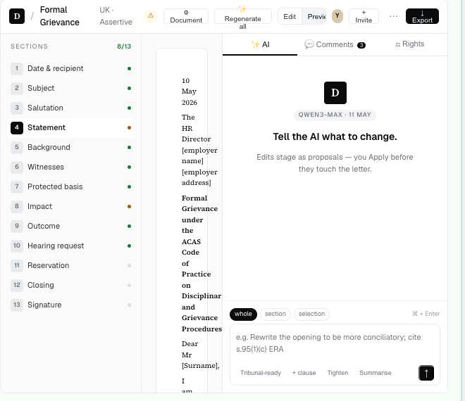
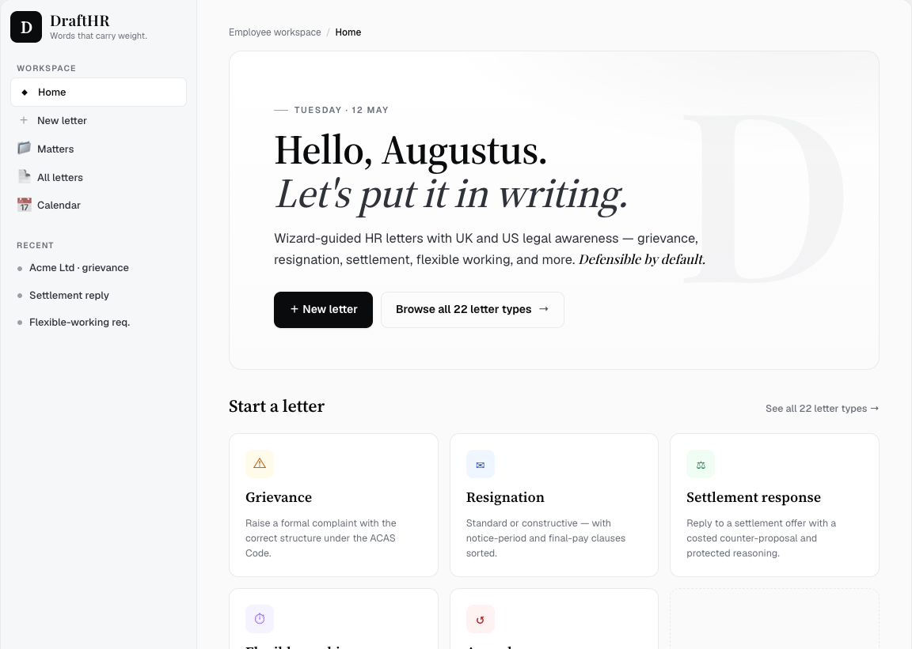
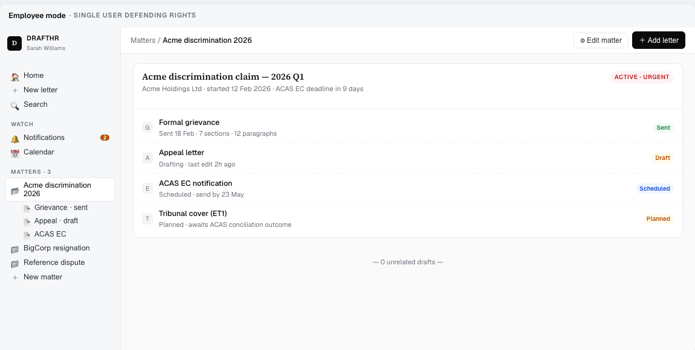

01
The blank page
Word documents, Slack threads, two-week back-and-forths, and a template that hasn't been touched since 2019. Letters that should take an hour take a fortnight.
HR LETTERS · UK + US
DraftHR drafts grievance, settlement, and disciplinary letters with structure, evidence, and an audit chain built in — so what goes out is what you'd actually defend.
— Three doors, one product
DraftHR is built for the three people on either side of an HR letter. Pick the door that fits — the product behind it is the same.
Draft, review, and defend the letters your business depends on. Wizards, citations, evidence, audit chain.
Start a workspace →Resign well. Raise a grievance properly. Request flexible working with the law on your side — without paying a solicitor.
Write your letter →Earn from your expertise. Get matched with HR teams that need a 30-minute review, named opinion, or full re-draft.
Join the marketplace →Trusted by HR teams at
— The reality
Three pressures meet on every letter: the speed the business needs, the precision the law expects, and the dignity the recipient deserves. Most teams have to choose two.
01
Word documents, Slack threads, two-week back-and-forths, and a template that hasn't been touched since 2019. Letters that should take an hour take a fortnight.
02
Generic chatbots will happily invent statutory references, miss an ACAS step, or confuse English and American employment law. Hallucinated authority is worse than no authority.
03
When a letter gets challenged — in mediation, at tribunal, in front of a regulator — the audit trail matters as much as the words. Most tooling can't produce one.
— Compared
Most HR letters are either copy-pasted from a template that's a decade out of date or rewritten by a generic AI that doesn't know UK law from US law. Here's where DraftHR is different.
— The editor
Cited clauses appear in-line. Evidence sits beside the paragraph it supports. The audit chain records who changed what, when, and why. By the time you hit export, the case for the letter is already assembled.
Statutory references, ACAS code paragraphs, and prior matter precedent surfaced where they're needed.
Emails, meeting notes, policy excerpts — attached to the paragraph that relies on them, not buried in a separate folder.
Every edit, every approval, every export — recorded in a tamper-evident chain, ready to defend in front of anyone.

— The library
From the everyday to the once-a-career — each letter type ships with its own wizard, citation set, and evidence requirements.
Acknowledge, investigate, decide — within ACAS-aligned timeframes.
Findings, sanction, and right of appeal — defensible by default.
Section 203 ERA-compliant draft with required independent-advice clause.
State-aware release language, OWBPA timing where applicable.
Statutory eight-step decision with reason-tested refusals.
With handover scope, garden-leave option, and reference position.
Performance-improvement plan or dismissal with reasoned authority trail.
Equality Act / ADA-aware adjustment language and OH-referral framing.
Collective consultation timing, pooling rationale, and selection criteria.
Measures letter, employee-rep election, and information & consultation pack.
Calibrated, defensible, and free of defamation risk.
50+ letter types across the UK and US in active library — full list inside the app.
— The marketplace
Book a 30-minute review from a vetted employment lawyer or seasoned HR consultant without leaving the draft. They get the full evidence pack, cite-checked clauses, and a clean diff. You get a named opinion you can rely on — usually within 24 hours.
Employment lawyer · 14 yrs · UK + ROI
Former senior associate at Charlemont & Wynne. Handles complex settlement and TUPE measures letters; flat-fee or hourly.
HR consultant · 22 yrs · UK + US
CIPD Chartered Fellow, ex-People Director at three FTSE 250s. Specialises in defensible disciplinary and grievance flows.
Employment attorney · 9 yrs · US
Bar-admitted in NY, CA, TX. Multi-state compliance reviews — pulls together state-specific variants in a single sitting.
— The flow
Step 01
Choose from the library, give the matter a name, and DraftHR loads the right wizard, evidence template, and citation set.

Step 02
Step-by-step prompts gather the facts in the right order. "Where do I stand?" or "did I mention…" reminders are baked in — not bolted on.
Step 03
Counsel-ready Word, PDF, and clean-markup formats — with a KMS-signed manifest, RFC 3161 timestamp, and a defensibility checklist before issuance.

— Pricing
Pricing scales with use, not seats — bring the whole team without worrying about who's logged in.
For consultants and single-handed HR managers.
£0/mo
Free forever. Up to 5 letters / month.
Most teams pick this
For HR teams handling matters end-to-end.
£39/mo
Per workspace. Unlimited letters & users.
For in-house counsel, multi-entity, or unionised employers.
Talk
Custom retention, dedicated sub-processor agreements.
— FAQ
Still wondering something? Email hello@drafthr.io — we usually reply within a working day.
No — DraftHR is a drafting and evidence platform, not a regulated legal advisor. The letters are designed to be defensible, but for contested matters we always recommend running the final draft past your solicitor or attorney.
To Anthropic Claude for drafting and critique, under a zero-retention agreement (no training, 5-minute cache only). Nothing else. Full sub-processor list and DPA on the privacy page.
UK (England, Wales, Scotland, NI) and US (federal + all states) are first-class. EU member-state variants are on the roadmap for late 2026.
Every action is hash-chained per tenant with pg_advisory_xact_lock serialisation; exports are PAdES-B-T style, signed with AWS KMS, and time-stamped via an RFC 3161 authority. The manifest is recipient-verifiable independently of DraftHR.
Yes — upload your letterhead PNG and signature once, applied to every export. Multi-entity employers can configure one letterhead per legal entity.
Settings → Generation model → "None". The drafting and critique steps become manual-only; the wizard, evidence locker, and export pipeline keep working.
Free while you're evaluating. No credit card. Five minutes to your first defensible draft.